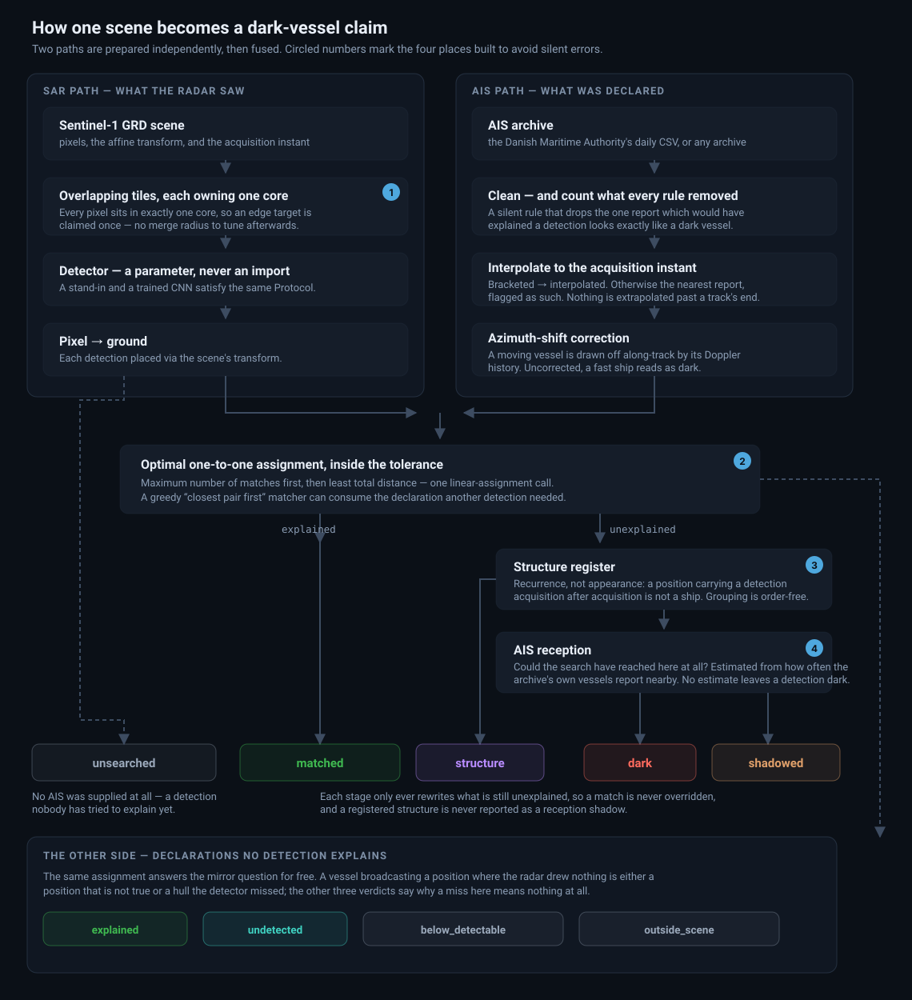

How it works
Detect every vessel in the radar scene, then subtract what AIS declared
Sentinel-1 radar sees ships through cloud and darkness. AIS says which ships chose to announce themselves. Match the two at the moment the radar image was taken. A detection nothing explains didn't announce itself.
The pipeline

The two paths don't touch until the fusion step. The radar side answers what is on the water, the AIS side answers what was declared, and neither influences the other's preparation. After fusion, the pipeline records what each answer rests on: which declarations were searched, how far it looked, and whether a position was measured or inferred.
The AIS archive is cleaned before anything is matched against it. Every rule counts what it removed, and the viewer's AIS panel shows those counts, because a dark call is only as good as the archive that was searched.
Five design choices
Interpolate to the acquisition instant
A vessel at 12 knots covers about 370 m a minute, more than the match tolerance. So every declaration is placed at the exact acquisition time before anything is compared, by interpolating between the reports either side of it. Positions are never extrapolated past the end of a track. Where no bracket exists, the nearest report is used, and the row says so.
Correct the azimuth shift
Radar reads along-track position from Doppler, so a moving target is drawn displaced along the satellite's ground track. Uncorrected, this alone puts fast vessels hundreds of metres from their detections and reports them dark. The viewer draws the correction as a dashed line from the declared position to the corrected one.
Deduplicate tiles by ownership
A scene is processed in overlapping tiles, so targets near an edge are seen twice. Merging duplicates afterwards would need a radius to tune and could merge two genuinely close hulls. Instead, each tile owns a non-overlapping core and reports only what falls inside it. Every target is claimed exactly once, by construction.
Exclude structures by recurrence
A position with a detection on pass after pass isn't a ship. This needs no labels and no appearance model, only provenance. It runs strictly after matching, so a vessel AIS explains is never reclassified.
Weight a dark claim by whether the archive could hear
An AIS archive's reach isn't uniform. Coastal receivers hear a transponder for some tens of kilometres and no further, so reception falls away offshore — along exactly the gradient a dark-vessel study cares about. Every vessel the archive already holds is used as a probe for how reliably it would have placed a transmitting vessel nearby, and that number goes on every row. Where it's too low to support a claim, the detection is reported shadowed rather than dark.
AIS reception
The question isn't whether a radio signal would have carried. It's the one the pipeline actually depends on: had a transmitting vessel been here at the acquisition instant, would this archive have placed it? A declaration is placed when a report falls within the max gap of that instant, so that's the question asked, with the same max gap. Decimated archives, receiver outages and satellite revisit all fold in correctly, because all three change the archive rather than the radio.
For one vessel's consecutive reports a gap of g seconds apart, an instant drawn
from that gap lies within the max gap w of a report over min(g, 2w)
of it — w at each end, capped at the whole gap. Summing over the gaps observed in a
neighbourhood gives sum(min(g, 2w)) / sum(g): 1 where reports come faster than
the gap allows for, falling towards zero where they don't.
Two things it deliberately doesn't do. A neighbourhood with too little evidence gets no estimate rather than a confident one, and a detection there stays dark with the reason on the row — reclassifying on an absence of evidence would be the same mistake as reporting a dark vessel on one, pointed the other way. And the floor is a policy rather than a measurement: the slider states where the bar sits, and the estimate stays on the row whatever you set it to.
The caveat is worth stating plainly. A vessel switching its transponder off looks exactly like a receiver that can't hear it, so where many vessels go dark, reception is underestimated and genuine findings are downgraded. That's the wrong direction for enforcement and the right one for a published claim.
The other side of the fusion
A dark vessel is a detection no declaration explains. The same assignment answers the mirror question for free — which declarations did no detection explain? — and throwing that half away discards a finding. A vessel broadcasting a position where C-band radar sees nothing is either a position that isn't true, or a hull the detector missed.
Three of the four verdicts exist to say when the radar's silence means nothing: outside_scene (the declared position isn't in the image, so nothing about it was searched — the declaration side's unsearched), below_detectable (shorter than the smallest vessel this detector is trusted to find), and explained. Only undetected is a finding. A declaration whose length the archive never gave is not excused as too small: an unknown length isn't a small one.
Taken together the two sides are a confusion matrix over two sensors, and the share of declared, detectable, in-scene vessels the radar also drew is an estimate of this detector's recall on this scene, from data nobody annotated. It's reported with its biases stated: vessels that declare themselves are larger and more cooperative than those that don't, and a spoofed declaration counts against the detector although nothing was ever there to find.
Three errors it avoids
1. Greedy matching reports explainable vessels as dark
Sorting every detection–declaration pair by distance and claiming the closest first doesn't find the most matches. At a 100 m tolerance:
| Detection | A1 | A2 |
|---|---|---|
| D1 | 90 m | 95 m |
| D2 | 98 m | 283 m ✗ |
Greedy takes D1–A1 at 90 m and strands D2, which gets reported dark, even though D1–A2 plus D2–A1 explains both. This happens more often in busy shipping lanes, exactly where such studies are sited. darkvessel solves it as an optimal assignment problem.
2. Structure clustering that depends on row order
Grouping recurring detections by greedy seed-and-claim gives different answers for different row orders of the same archive. Take three positions A–B 90 m apart, B–C 90 m, A–C 180 m, at a 100 m tolerance. One order gives two groups, another gives one. Whether something counts as a structure would depend on how the file was sorted. darkvessel uses connected components instead, which give the same answer for every order.
3. Treating an archive's silence as uniform evidence
A map of unexplained detections drawn without accounting for where the archive can actually hear is partly a map of where the receivers are — and the bias runs the wrong way, because reception is worst offshore, which is where a dark vessel matters. See AIS reception for what is estimated and how.
The detector
The viewer here runs a deterministic stand-in: it flags pixels above a brightness threshold, which is enough to exercise the rest of the chain and nothing more. The detector arrives as a parameter, never an import, so a real one drops in without anything else changing — and one has.
CentreNet, a small U-Net of 0.39 M parameters, predicts a heatmap of ship centres. It was trained on LS-SSDD-v1.0: 15 Sentinel-1 scenes cut into 9,000 labelled sub-images. Validation is held out by scene, because neighbouring sub-images share sea state and often the same ships, so a random split would leak. Each detector's threshold is chosen on validation and applied unchanged to the official test scenes.
| LS-SSDD test | Detector | Precision | Recall | F1 | AP |
|---|---|---|---|---|---|
| Offshore 2,234 images |
CFAR | 0.596 | 0.817 | 0.689 | 0.790 |
| CNN | 0.824 | 0.912 | 0.866 | 0.951 | |
| Inshore 766 images |
CFAR | 0.265 | 0.295 | 0.279 | 0.176 |
| CNN | 0.138 | 0.321 | 0.193 | 0.117 | |
| All 3,000 images |
CFAR | 0.488 | 0.623 | 0.547 | 0.563 |
| CNN | 0.444 | 0.692 | 0.541 | 0.626 |
The baseline is two-parameter CA-CFAR, the classical radar detector, with its windows and threshold tuned on the same validation scenes. A prediction counts as a hit when it falls inside a ship's box, paired one-to-one by optimal assignment — the same reasoning as the fusion step. AP is threshold-free.
What the numbers say, including where they don't flatter it
At sea the CNN is clearly better: it finds 91% of ships with less than half of CFAR's false alarms, and open sea is where a dark vessel is searched for.
Inshore both are poor, and the CNN is worse. Its false alarms concentrate in a few scenes: dense urban land whose canal banks read as hulls, and a band of noisy low-backscatter sea at a swath edge. Overall F1 is therefore a tie, and only AP favours the CNN. The remedy is a land mask before detection, not more training — hard-negative fine-tuning was tried and inshore AP fell, because the training scenes' land doesn't look like the test city.
Reporting the inshore column rather than the offshore one alone is the point. A detector that is excellent in one regime and poor in another is two different claims, and the honest summary is both.
What it can't yet claim
The published viewer runs on a synthetic scene with the deterministic stand-in. It shows that the reasoning is right, not that the detector is good. The trained detector above has been measured only against LS-SSDD's 8-bit imagery; it has not yet been run on a calibrated Sentinel-1 scene, and the two paths — real scene and trained detector — have not yet met. The next step is one real Sentinel-1 scene with its matching DMA AIS day file.
Where results are modest, they should be reported as modest. A detector that usefully ranks candidates for inspection is a different, more honest claim than one that maps them.